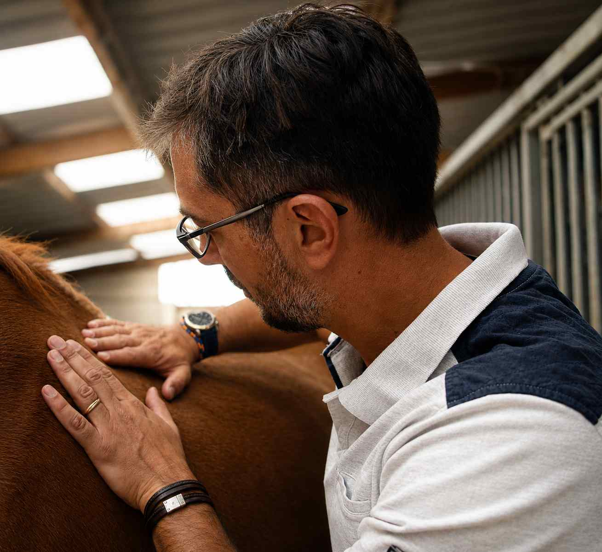
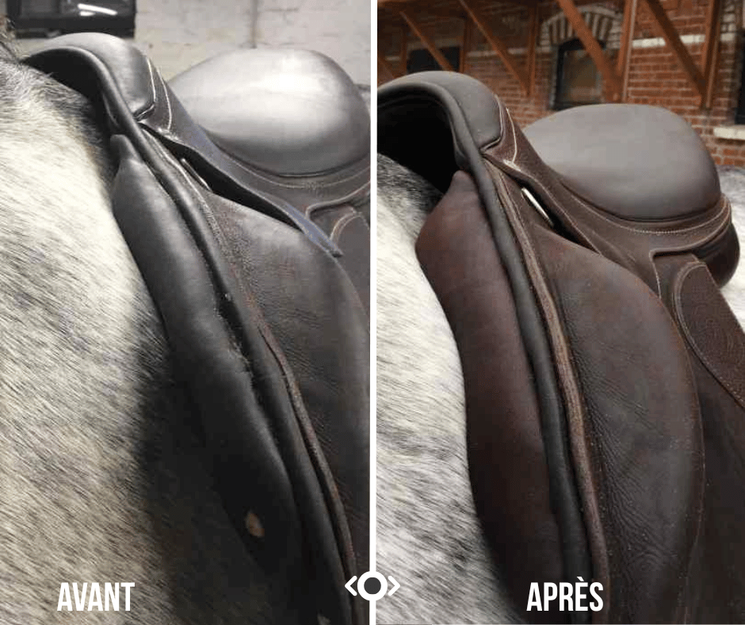
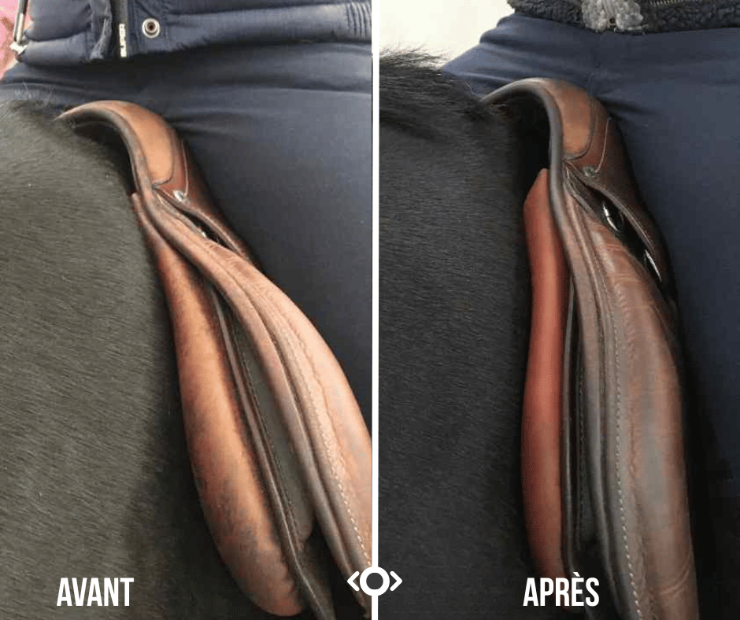
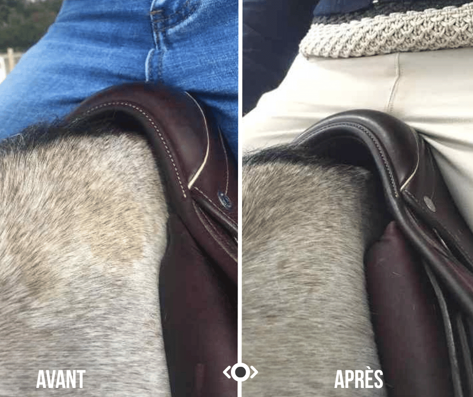
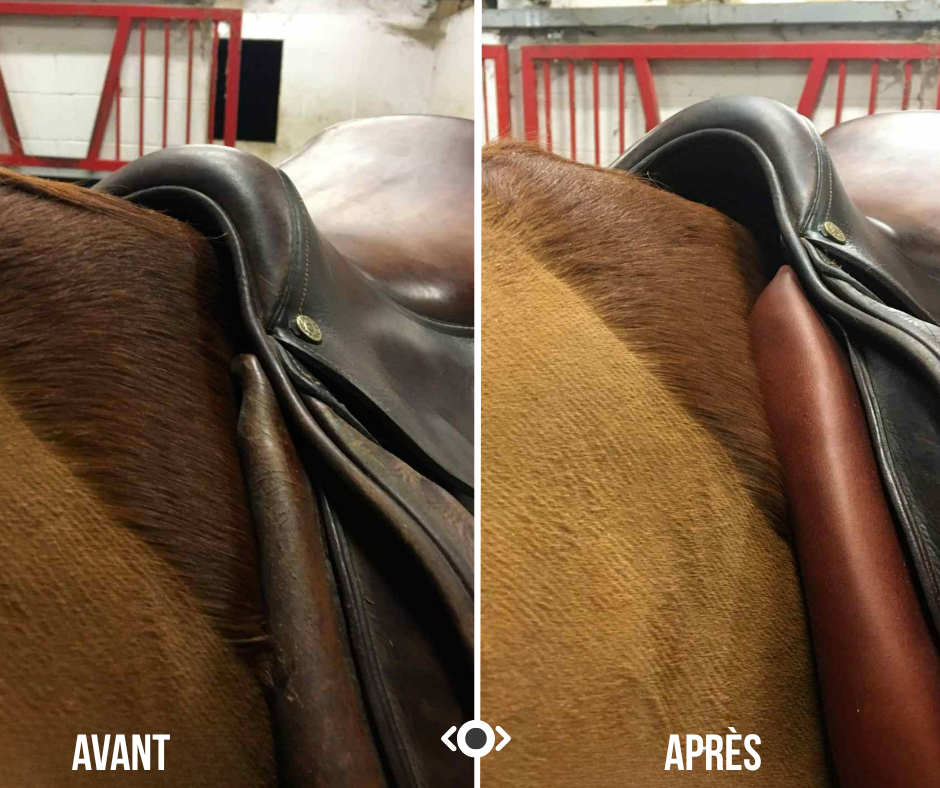
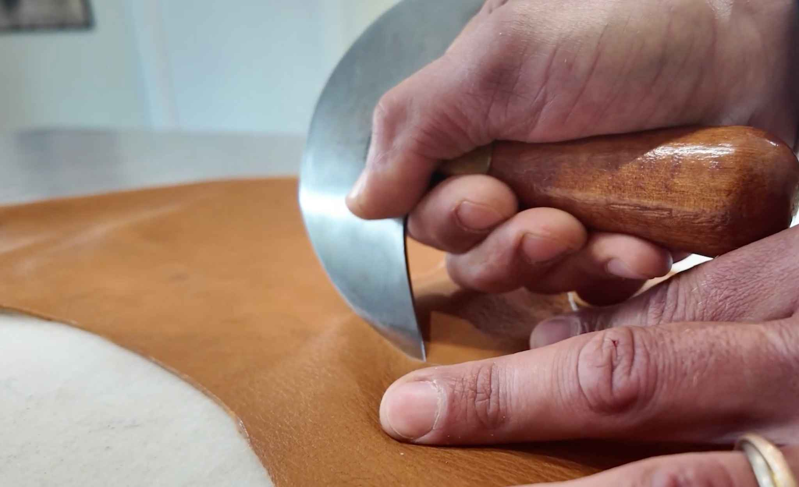
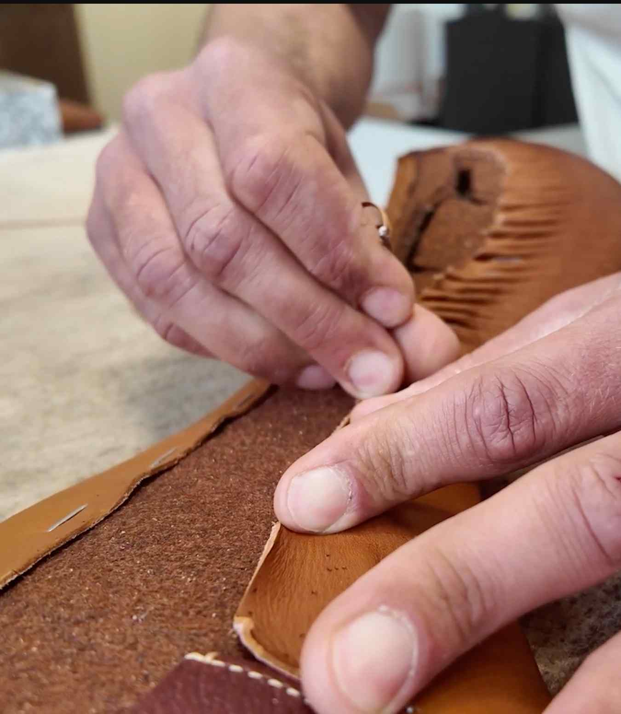
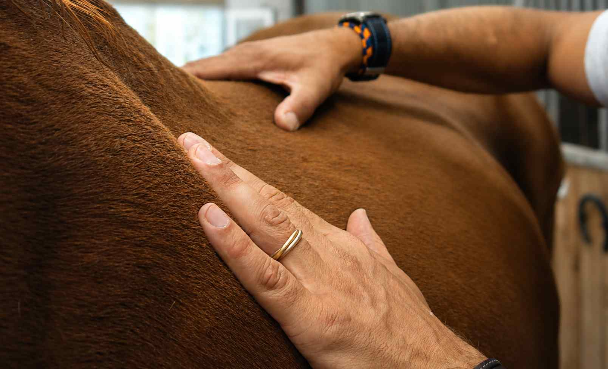

Modification
& adaptation de selle
Un travail artisanal réalisé à la main, pour que votre selle s'adapte parfaitement à votre cheval.
Supprimer les points de pression, rétablir l'équilibre
L'objectif principal est de supprimer les points de pression et de compression dans les zones épaules, garrot et dos de votre cheval.
Le second objectif est de rétablir le parfait équilibre de la selle sur le dos de votre cheval afin de favoriser le bon positionnement et le confort du cavalier.

Les étapes de la modification
Prise de mesures
Je viens prendre mesure des modifications à effectuer sur votre selle pour l'adapter à votre cheval.
Démontage des panneaux
Je démonte et découds les panneaux de votre selle.
Modification
Je rajoute ou enlève de la matière à l'avant et/ou à l'arrière des panneaux en fonction du besoin.
Adaptation morphologique
Je modèle les panneaux à la morphologie de votre cheval par diverses étapes de mise en forme et ponçage.
Remontage
J'enveloppe à nouveau les panneaux de cuir (neuf si nécessaire) et les re-fixe à votre selle.
Test final
Je reviens tester la selle modifiée sur votre cheval pour vérifier le résultat et garantir le bon ajustement.
Avant / Après








Un travail artisanal, réalisé à la main
Formé par Jean-Luc Parisot, l'un des meilleurs Maîtres Selliers du monde, Benjamin maîtrise les techniques de sellerie traditionnelle dans leur intégralité.
Chaque modification est réalisée avec des matériaux de qualité, sélectionnés pour leur durabilité et leur compatibilité avec votre selle existante.
- Modification et refection des panneaux
- Réglage de l'arcade
- Correction de l'équilibre et de l'assiette
- Travail du cuir et des finitions
- Rembourrage et garnissage sur mesure
Votre selle nécessite une modification ?
Contactez Benjamin pour discuter de votre situation. Un simple échange suffit souvent à orienter vers la bonne solution.
Me contacter